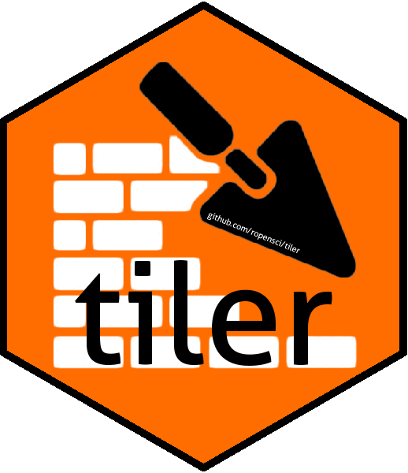

Changelog
Source:NEWS.md
tiler 0.2.2
- Breaking change: no longer using a
formatargument. All tiles are TMS. - Updated
gdal2tilesto version 2.4 release. - Bug fix.
- Updated documentation.
tiler 0.2.1
CRAN release: 2018-11-18
- Improved and simplified instructions and expectations for Windows use. Windows users must add
OSGeo4W.batpath to system path. - Added
leafletexamples of remotely hosted tiles generated bytilerto vignette. - Bug fix related to system path to
OSGeo4W.batbeing ignored on Windows.
tiler 0.2.0
CRAN release: 2018-06-09
- All three
gdal2tiles*scripts have been updated to accept a command line argument when called by R that provides a path for any temporary files, i.e.,tmp.*.vrtfiles created by thegdal2tiles*scripts. These were previously accumulating in the system temp folder. The new temporary directory is a sub-directory insidetempdir(). Therefore, it is cleaned up when exiting R. Nevertheless,tilealso force deletes this subdirectory immediately after its internal system call to one of thegdal2tiles*scripts returns, so the temporary sub-directory does not even exist for the full duration of thetilecall. - Added functions
tile_viewerandview_tilesand other supporting functions for generating HTML Leaflet tile preview web page. - Added arguments to
tile.tilenow generates previewer by default. - Added unit tests.
- Updated vignette.
tiler 0.1.6
CRAN release: 2018-06-06
- Made minor formatting changes per CRAN request for resubmission.
tiler 0.1.5
- Refactored
tile, added arguments includingresumeandformat, changed some argument names. - Added default support for XYZ format tiles in addition to TMS. This brings in another version of
gdal2tiles. - Updated documentation.
- Added unit tests.